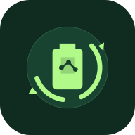

Recicla.IA
Machine Learning na prática • Protótipo educacional
Treine uma IA. Teste no mundo real.
Fotografe um resíduo ou escolha uma imagem. Seu modelo treinado tentará reconhecer sua categoria.
Carregando o modelo treinado…
Câmera ao vivo
Aponte para um objeto e capture sua fotografia.
Sua fotografia
CLASSIFICAÇÃO DO MODELO
—
—
Este resultado é educacional e não determina o descarte correto.
Entenda o experimento
A imagem é processada pelo modelo no navegador. Os percentuais representam a confiança atribuída pelo modelo, e não sua precisão geral. O modelo pode errar, inclusive com confiança alta. Não use o resultado isoladamente para definir o descarte.
As bibliotecas de IA são carregadas inicialmente pela internet. As fotografias não são enviadas a uma API de classificação.